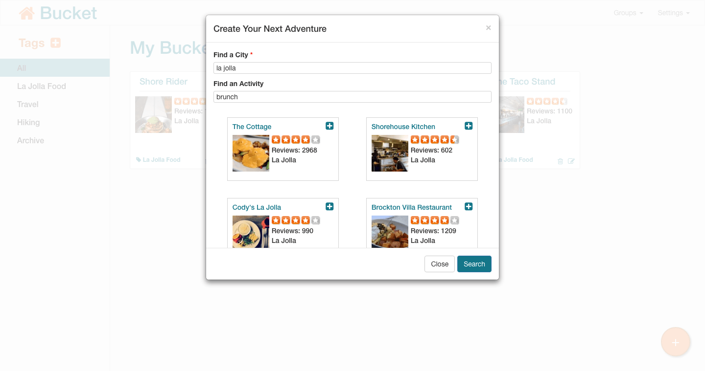
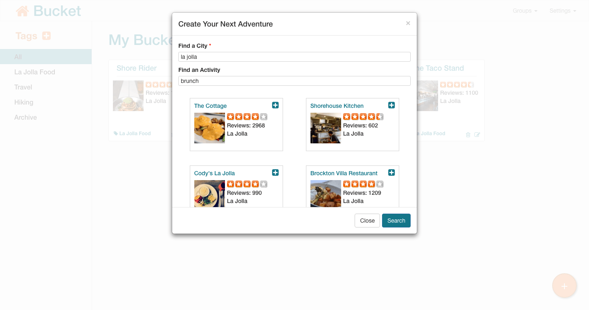

Process
As our first venture in need-finding, we were able to conduct our own field research in order to inform our initial design process. Our previous methods for primary research have included standard interviews, museum observations, and visitor surveys.
User Interviews
In standard interviews, we conducted in-person user interviews with individuals who’ve had previous experience visiting museums in general. Some general questions included:
- Did you know that there are museums in Balboa Park? If so, have you been to any one of them?
- How would you describe a museum?
- How long has it been since you last went to a museum?
- What did you like/dislike about the museum?
- What aspects of a museum attracts you the most?
- What would you like to see in a museum that you visit?
From these interviews, we ultimately discovered that the motivation to visit museums is hindered by the lack of engagement and interactivity of the exhibits.
In-person Observations
To further our research, we visited the museum on two separate occasions for user research. There, we closely observed how people interacted with the exhibit, how they interacted with other visitors in the museum, which exhibits they went to first, and which exhibits they stayed at the longest. We wanted to see what the current users of the museum do when they explore the museum itself.
From our field research, we found that rather than following the typical layout of the room, visitors gravitated towards exhibits that appeared more interactive and hands-on. As a result, they often skipped over flat exhibits or glanced over them very briefly. The exhibits also had questions posted near the artwork to engage the visitors in critical thinking. However, by the amount of time that they spend at each piece, it is evident that those questions do not provoke engagement.
Visitor Surveys
While at the museum, we handed out Google Form surveys for visitors to fill out on our tablet. Questions included general topics about museum experiences regarding: how many times they’ve visited a museum in the last 3 months, a description of their last experience visiting a museum, what they liked and what they didn’t like about their experience, and how they interacted with the exhibits at the museum.
From these survey responses, we found that visitors primarily interacted with museum exhibits by taking photos and by developing their own interpretation of the art. Visitors also generally favored exhibits that were 'thought-provoking'. Finally, when asked what words came to mind when they hear the word 'exhibit,' most listed the word 'interactive'.
Primary Research Conclusion
Ultimately, we discovered from our primary research that in order to create more engaging opportunities for holding visitor attention, we should try creating interactive experiences that keep visitors occupied, connect with them on a personal level, and encourage introspection. In addition, we want to also focus on opportunities that may be extrinsically rewarding.
Due to the financial and physical constraints of MOPA’s exhibition gallery, we were prompted to design a new opportunity that would be cost-efficient, space-efficient, and wouldn’t require extra manpower.
As a result, we concluded that our design solution needed to address the following key questions:
- Will people need to have known about MOPA before coming to the museum?
- Will our solution be able to involve the whole family?
- Will people be able to take away an experience or souvenir from our solution?
- Is our solution sustainable, and can it be implemented on a low budget?
We needed to find a way that would bring in new interest to the museum in addition to retaining current visitors who would be willing to visit the museum over upcoming years. Therefore, in order to ensure that our solution was not only effective, but also sustainable in the long run, we needed to create a prototype that would be economical and quick to implement within the boundaries of these constraints.
Ideation
Based on our design constraints and the key questions we came up with before, we brainstormed various possible solutions addressing each question. Then we voted on the top 3 ideas and created paper prototypes for them.

Prototype 1
Here, the paper represents a museum wall. At MOPA, there are questions that are written on the wall asking visitors to think about the significance and value of each art piece. However, there is currently no place for visitors to actually answer these questions. Rather than stopping to think about the questions that are available on the wall, visitors tended to overlook it completely. In order to provide the opportunity for the visitors to immerse themselves in with the questions, we felt that we needed to create a space where visitors could leave a piece of themselves behind by being able to post their answers on the wall.
Prototype 2
Here, we have an early prototype of a museum activity card that we are thinking of implementing. While visiting the museum over the weekend, we have noticed that although people tend to go through the room quickly, they don't always look at every exhibit that is available. Some displays naturally stick out more than others. As such, in order to help visitors pace themselves, we were hoping that this stamp card that has visitors identify a photograph from a mosaic will incentivize visitors to go through the entire gallery and look at each exhibit carefully.
Prototype 3
Here, we focused more on how visitors could create their own form of art through putting up personal photos in a particular section of the museum. At the museum, we noticed that there were empty spaces that weren't being used for any of the artwork. After talking with our museum coordinator, Joaquin, we soon found that the structure of the wall simply cannot support the burden of framed photographs. Thus, we proposed the idea of visitors submitting their own Polaroids and printed photographs to be hung up along the wall, possibly with a new theme each month. This way, visitors could see themselves being a part of the museum while also capitalizing on the free space available in the museum.
Feedback
Prototype 1
- May appear distracting/intrusive
- Might be weird to just see one post-it next to an exhibit (if not many people have participated)
- Needed physical real estate for post-its
Prototype 2
- Liked the idea of a "scavenger hunt" type activity
- Could see kids especially enjoying it
- Stamp cards require additional monitoring from staff, so not feasible
Prototype 3
- Liked the idea, but would only work if visitors had already been to MOPA before
- Required visitors to bring their own material
Based on the feedback we received from our peers and research conducted by the museum, we decided to converge on one solution: the family activity cards in Prototype 2. As a result, our next round of prototyping involved all of our group members mocking up several versions of the possible activities we could include, all of which can be found in this folder.
Out of all the prototypes we created, we decided to narrow down to only 2 different versions in order to test them at the museum.
Activity 1: Photo Unscramble
In this activity, kids are prompted to solve a puzzle in a gallery photo hunt. The question “Who helped you complete this activity?” is designed to encourage interaction within the family in this fun activity. On the other hand, the question “What do you think the artist wanted you to notice?” is designed to encourage children completing the activity to reflect on their own personal values and interpretation of the artwork.
Activity 2: Find & Sketch
In this activity, kids are asked to draw in what they think the rest of the photo will look like, then seek out the exhibit in the gallery to compare what they drew, as a way to spark conversation between one another. On the other side of the card, kids are also encouraged to seek interesting photos of their own, allowing them to form their own opinions about the gallery and the pictures within it.
Prototype Testing
Going forward with the research questions in mind, we set out to test our prototypes at the museum. We printed multiple low-fidelity copies in order to test them, see the results, and start thinking about the next iteration. As our target audience is families, we decided to go over the weekend where we know the flow of families into the museum was much larger compared to a regular weekday. In total, we asked four different groups of families that day to test out our prototype.
Results
Upon giving the prototypes out to families, they seemed excited and eager to complete the activities. We had several team members stationed throughout the gallery to observe participants in our prototype testing. Ultimately, we found that what people say isn’t necessarily what they do.
Here, the child & adult are completely split up. While the child is completing the activity alone, the adult is in a different section looking at the artwork.
While participants often indicated in the card that they worked with family members on the activities, children and parents were in fact split up for most of their time in the gallery. Many adults resolved to watch over their children from afar, some pairs were divided up entirely.
Despite this, however, parents and children appeared content with how they interacted, as children were able to explore the gallery freely while parents were able to take a short breather and enjoy the exhibit. Also, they did come together at the end to share their experiences.
Our final iteration and our ultimate design solution took into account the feedback we received overall from the class and the users we tested it on at MOPA. The key elements for our design solution included having clearer instructions on our cards and having more of the activities that our users favored. We decided to move the instructions from the bottom left to the top, where people tend to look at first. Also, we shrunk the MOPA logo, so that there would be more room for more activities, since that is the main focus of the cards.
With these activity cards, members of the family are also able to share with one another their interpretation of the pieces at the museum. These activity cards can also be shared with other friends and family members as it’s a little piece of the museum that they can take away. This can create the opportunity for family members to have a meaningful conversation about their museum experience, whether it’s during the time they complete the activity card or after they leave the museum. This furthers our objective of motivating our target audience to continuously come back to the museum to explore the exhibits and engage in such activities to share with family and friends.
With this last iteration, we took the data that we received from user testing in order to create a design that we believe is more human-centered and will be received well by our target audience. With the subtraction of some design issues (such as eliminating confusing coloring background and confusing instructions placed in unintuitive areas) and the addition of more ideas that resulted from our user testing data, we created this final design solution that we hope will engage family members all around and further continue to motivate them to visit again.


 
